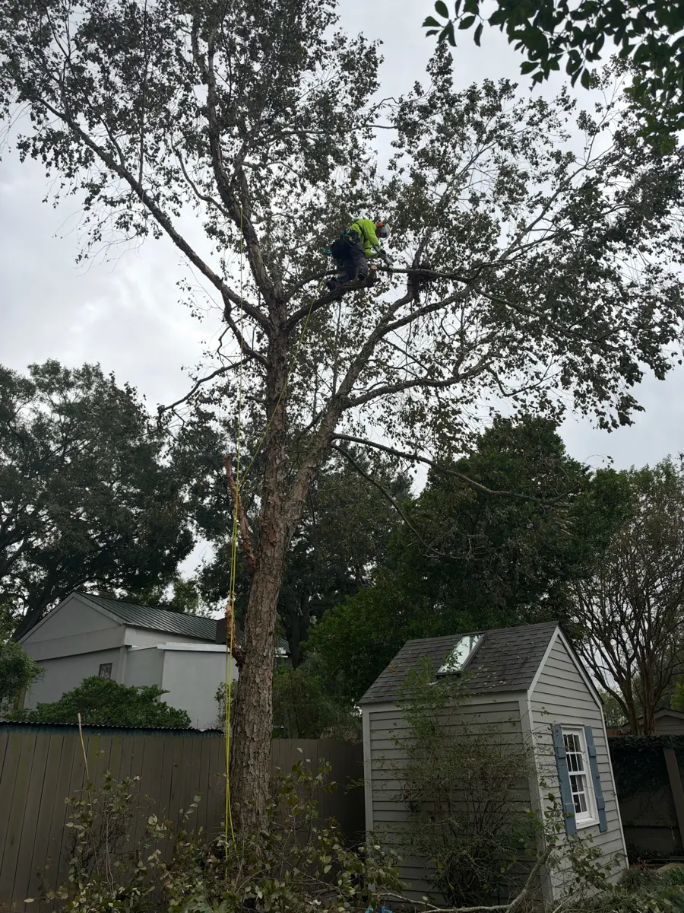

Tree Service & Tree Removal in Garden District, LA
A Perfect Cut Tree Service proudly provides professional tree service in the Garden District, LA, and surrounding New Orleans neighborhoods. From emergency tree removals to scheduled pruning of historic oaks, we use advanced equipment and noninvasive techniques to protect your trees, enhance curb appeal, and maintain long-term landscape health.
Urgent or unsafe?Call an Arborist: (504) 732-0779

Our Services Include
- Tree Removal
- Tree Trimming and Pruning
- Stump Grinding and Removal
- Emergency Tree Removal and Storm Cleanup
- Consulting and Construction Permitting
- Hazardous Tree Assessments
- Tree Fertilization and Health Care
Each service is tailored to your property’s specific needs to deliver lasting protection and enhance curb appeal.
Professional Tree Trimming and Pruning in Garden District, LA
Routine pruning keeps your trees healthy and beautiful. Following ANSI A300 standards, we perform crown thinning, deadwood removal, canopy shaping, and storm-prep pruning to promote strong structure and reduce storm risks.
Expert Tree Care Tailored to the Garden District’s Historic Landscape
The Garden District is renowned for its centuries-old live oaks, lush courtyards, and narrow streets, making precision tree work a necessity. A Perfect Cut understands the neighborhood’s distinct challenges, from navigating city ordinances to preserving tree roots around historic foundations. Our local expertise ensures your property stays compliant, safe, and visually stunning.
Tree Removal in Garden District, New Orleans
When trees become diseased, hazardous, or damaged, A Perfect Cut provides professional, crane-assisted removals. We handle full debris removal and cleanup, restoring safety and peace of mind.
Emergency Tree Service in Garden District
Storms and hurricanes are common in New Orleans.
Why Choose Our Emergency Service
- Safe crane-assisted removals
- Full cleanup and debris removal
- Insurance documentation support

Tree Consulting and Permitting Assistance in New Orleans
Navigating New Orleans’ tree ordinances can be complicated, especially in the historic Garden District. Our team manages the entire permitting process for tree removals, construction work, and landscape improvements. A Perfect Cut’s consulting arborists work directly with the New Orleans Parks & Parkways Department and city inspectors to ensure every project meets local regulations, protects heritage trees, and maintains full compliance with municipal tree codes.
Our Permitting Services Cover
- Tree removal and trimming permits
- City compliance documentation
- Pre-construction assessments
- Coordination with local authorities
Common Tree Issues in the Garden District
The Garden District’s climate and soil can stress trees over time.
Common Problems We Address
- Storm-damaged limbs and hazardous overhangs
- Root intrusion near foundations or sidewalks
- Fungal decay and soil compaction
- Pest infestations (termites, borers, beetles)
- Overgrown branches obstructing power lines
How We Solve These Problems
- Thorough inspections and evaluations
- Targeted pruning and soil aeration
- Pest and disease management
- Preventive maintenance programs
Storm Damage Cleanup and Insurance Support
After hurricanes or strong winds, we help homeowners remove fallen trees and debris safely.
Seasonal Tree Maintenance Programs
Like pest control, tree care should adapt to Louisiana’s changing seasons. Our annual maintenance programs include:
- Winter (Jan, Feb): Structural pruning and storm preparation
- Spring (Mar, Apr): Soil testing and fertilization
- Summer (May, Aug): Pest monitoring and canopy shaping
- Fall (Sept, Dec): Deadwood removal and nutrient enrichment
Why Garden District Homeowners Choose A Perfect Cut
- In local tree care since 2006
- Crane-Assisted Tree Removal Experts
- Estimates and Clear Communication
- Locally Owned and Family Operated in Metairie

Frequently Asked Questions
How much does tree service cost in the Garden District, New Orleans?
Tree service costs in the Garden District depend on the tree’s size, height, access, and proximity to homes, sidewalks, and utilities. Many properties in this area have tight setbacks, historic fencing, and mature trees, which can require additional rigging or crane support. The best way to understand cost is through an on-site evaluation, where tree condition and site constraints can be assessed accurately.
Do I need a permit to remove or heavily prune a tree in the Garden District?
Yes. The Garden District is a designated historic district, and tree removal or significant pruning often requires approval from the City of New Orleans and, in some cases, the Historic District Landmarks Commission (HDLC). Permit requirements vary by tree species, size, and location. A local arborist familiar with Garden District regulations can help navigate permits and ensure work stays compliant.
How quickly can you respond to emergency tree situations in the Garden District?
Emergency response times depend on weather conditions, road access, and overall storm impact. In the Garden District, downed trees often block narrow streets or fall across historic homes and fencing, which requires careful, controlled removal. Crews equipped for emergency response typically prioritize safety, access restoration, and damage prevention before full cleanup begins.
Can tree removal and stump grinding be done in one visit?
In most cases, yes. When site access allows, tree removal and stump grinding can be completed during the same visit. In the Garden District, underground utilities, brick walkways, and landscaping features may affect how deep stump grinding can go. These factors are usually identified during the initial on-site assessment.
Do you work with historic or protected trees in the Garden District?
Yes. Many trees in the Garden District are protected due to their age, species, or historical significance. Work on these trees often requires preservation-focused pruning methods, careful documentation, and city approval. Arborists experienced in historic districts understand how to balance safety, tree health, and preservation requirements.

Get Expert Tree Care You Can Trust
A Perfect Cut Tree Service is trusted by homeowners and businesses across the Garden District and greater New Orleans for safe, professional, and affordable tree care. Our arborists handle everything from precision pruning and stump grinding to large tree removals and storm cleanup.
We also serve nearby neighborhoods. See our Tree Service in Audubon, LA page.
What to Photograph From a Safe Distance
Photos and video show us the tree, the property around it, how we would reach it, and any visible hazards.


Tree down or a broken limb?
Skip the photos and call. Calls are answered 24/7.
(504) 732-0779Office hours: Monday to Friday 7 AM to 5 PM, Saturday 7 AM to 3 PM, closed Sunday.

Ready to Show Us Your Tree?
Show us the tree. An arborist reviews what you send. Photos give us a first look. Some trees need an in-person visit before we can make a final recommendation.